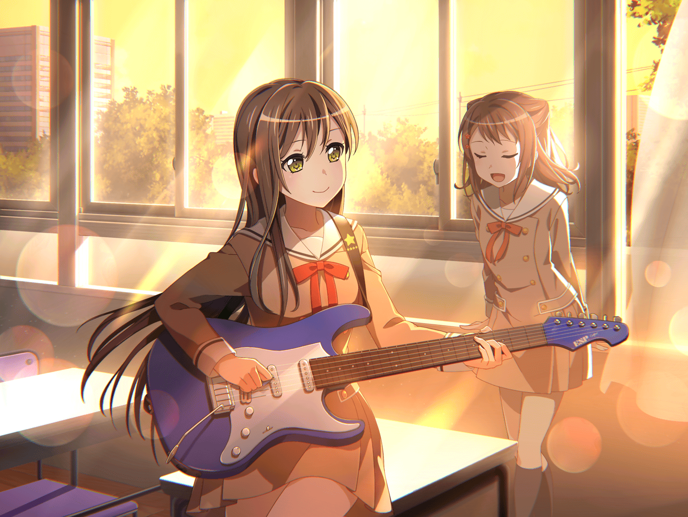

数日後
通学路
香澄
有咲ぁ～！ おはよ～！
有咲
くっつくなっ！
香澄
スキンシップだよ～♪
有咲
人前でじゃれつくな
りみ
香澄ちゃん、有咲ちゃん、おはよう
香澄
りみりん！ おはよ～♪
りみ
今日こそは、いい作戦を考えないとね
有咲
あれからけっこう経つからな
香澄
時間だけがすぎていくー！
沙綾
みんな、おはよう
香澄
あっ、さーや！ おたえも！
たえ
おはよう
沙綾
なにかいい案は浮かんだ？
香澄
うっ。まだだよー
沙綾
やっぱり。私もぜんぜんだよ
香澄
……よしっ！
今日の放課後までに考えよー！
たえ
なにも思いつかなかったら？
香澄
うーん。……罰ゲーム？
りみ
えっ
香澄
りみりんの罰ゲームはね、チョココロネ抜き？
りみ
えええっ！！！
そんなの無理だよ、拷問だよ……
香澄
じゃあね！
丸一日、私がベタベタするのはどうかな！
有咲
まさしく拷問だな
沙綾
いつものことだよね
たえ
香澄の罰ゲームは？
香澄
んーとね。みんなにベタベタできないとか？
有咲
へえー、できるのか？
香澄
むりっ！ 我慢できないもん！
たえ
ちゃんといい案が出れば問題ない
沙綾
とにかく、頑張って考えないとね
香澄
みんな、放課後に向けて頑張ろー！！

放課後
花咲川女子学園 1-A教室
有咲
……で、なにか思いついた人は？
香澄
うーん
りみ
えっと、私はなにも……
たえ
考え中
沙綾
お手上げだよ
有咲
浮かない顔ばかりだな
香澄
有咲は？ 有咲はなにか思いついた？
有咲
なにも
香澄
有咲でもだめかー
沙綾
ふうー。どうにかならないものかな
たえ
モヤモヤする。ギター弾こう
香澄
なんかおたえのギター聴いてたら、歌いたくなってきちゃった！

香澄
き、ら、き、ら
沙綾
ひ、か、る
りみ
お、そ、ら、の
有咲
……ほしよ
たえ
いいね。私ももっと弾こうっと
有咲
ったく
香澄
あはっ。みんなでキラキラ星♪
たえ
気づいたら、みんな歌ってたね
りみ
香澄ちゃんの歌聴いたら、私も歌いたくなっちゃったよ
有咲
悔しいけど、完璧に乗せられたな
沙綾
ここにいるみんなが、同じ気持ちなんだなって思ったよ
りみ
すごく楽しかったよね
香澄
……それ！
みんなっ、それだよっ！！
香澄
この感覚……なんだと思う！
商店街の人たちにとってのお祭りって！！
たえ
今の私たちの感覚と……
香澄
一緒に笑い合える仲間が集まって……
少しずつ、絆が深まって……
香澄
楽しさや嬉しさが、いっぱいっぱい増えていって……！
香澄
それって、
絶対になくしちゃいけないものだよね！！